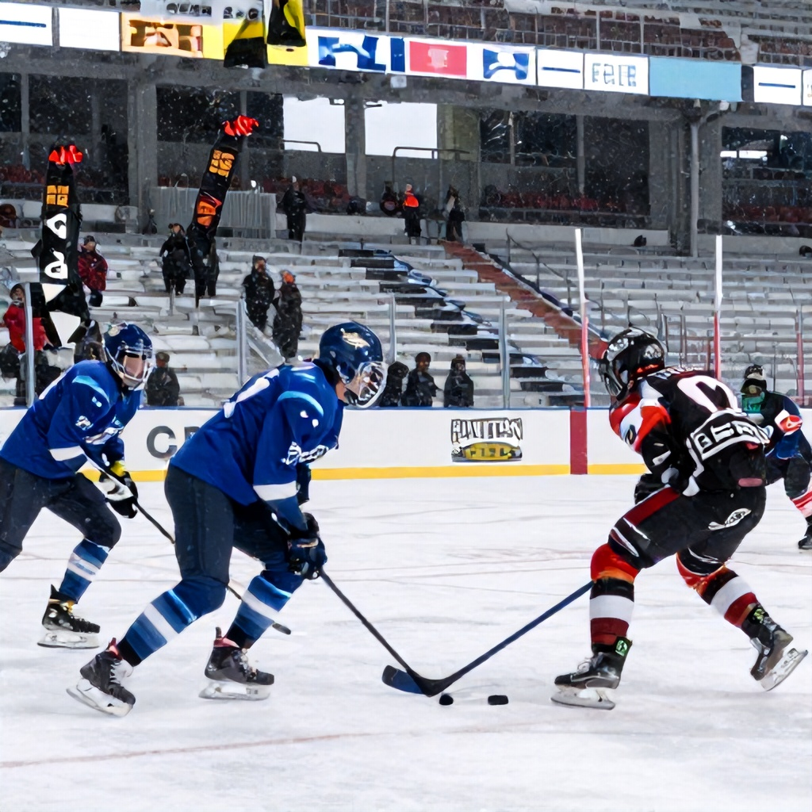

With Week 2 of the CFL season underway, fans are treated to a trio of compelling matchups across the league. While the Hamilton Tiger-Cats took on the Winnipeg Blue Bombers last weekend in a high-stakes showdown, the remaining games promise more drama, strategy, and excitement. Here’s a look at the week’s key matchups and what to expect.
Hamilton vs. Winnipeg: A Battle of the North
The first game of the weekend saw the Hamilton Tiger-Cats travel to Winnipeg, where they faced off against the Blue Bombers in a thrilling contest. Though the result has already been decided, it’s worth noting how the game unfolded. The Blue Bombers came out strong, leveraging their home-field advantage and solid defense to keep the pressure on Hamilton throughout. The final score reflected the competitiveness of the match, with Winnipeg edging out a hard-fought victory.
Despite the outcome, the performance by both teams highlights the growing intensity in the CFL’s northern division. With both squads looking to build momentum for the second half of the season, this game sets the stage for an intriguing rivalry moving forward.
Montreal vs. Toronto: A Battle for the East
Next up is a matchup between the Montreal Alouettes and Toronto Argonauts, scheduled for June 13th. Both teams are entering the week with varying degrees of optimism, but the stakes are high as they battle for position in the East Division.
Currently, the odds show Montreal as the slight favorites, with a moneyline of -213, while Toronto sits at +290. The spread stands at a tight -7 for Montreal, suggesting a competitive game that could go either way. The total is set at 51.5, indicating a likely low-scoring affair.
This game will be critical for both teams’ playoff aspirations. Montreal will need to rely on their strong offense and improved defense, while Toronto will have to capitalize on their special teams and running game to stay competitive.
Saskatchewan vs. BC: The West Coast Showdown
Finally, the CFL’s western frontiers will clash as the Saskatchewan Roughriders face off against the BC Lions on June 14th. This matchup brings together two teams with distinct strengths and challenges. The Roughriders are known for their gritty defense and powerful running game, while the Lions have been building a reputation for consistency and strong offensive execution.
The odds favor Saskatchewan slightly, with a moneyline of +110, while BC Lions are listed at +155. The spread is set at -2 for Saskatchewan, implying a close contest with a potential edge for the home team. The over/under is set at 52.5, suggesting a game with plenty of scoring opportunities.
For Saskatchewan, this game represents a chance to assert dominance in the west and gain confidence heading into the playoffs. For BC, it’s an opportunity to prove their mettle against a tough opponent and maintain their playoff hopes.
Looking Ahead
As the CFL continues its regular season, each game becomes more crucial in shaping the playoff landscape. Whether it’s the high-octane rivalry between Winnipeg and Hamilton, the strategic East Division battle between Montreal and Toronto, or the gritty west coast showdown between Saskatchewan and BC, fans can expect more drama and excitement in the coming weeks.
With the weekend’s games setting the tone for the rest of the season, CFL enthusiasts are sure to find something to cheer about—whether it’s watching their team rise to the top or supporting the underdogs in their quest for glory.